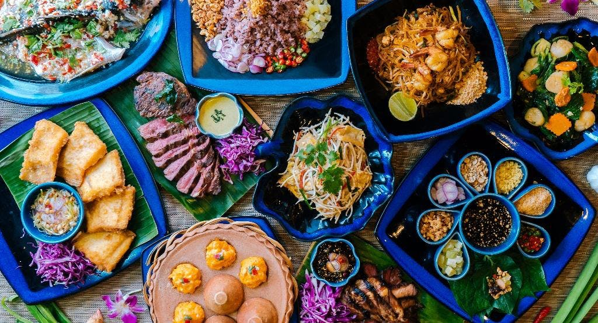

Traditional Thai Recipes
Thai food is a type of food that was first made in Thailand. Thai food is often spicy, but does not have to be. Thai food is shared with every person at the table. The meal is not thrown away. The Thai believe that throwing food away would anger the god of rice
. Thai food is eaten with a fork and a large spoon.
Thai food is known for its enthusiastic use of fresh (rather than dried) herbs and spices. Common flavors in Thai food come from garlic, galangal, coriander/cilantro, lemon grass, shallots, pepper, kaffir lime leaves, shrimp paste, fish sauce, and chilies. Palm sugar, made from the sap of certain Borassus palms, is used to sweeten dishes while lime and tamarind contribute sour notes. Meats used in Thai cuisine are usually pork and chicken, and also duck, beef, and water buffalo. Goat and mutton are rarely eaten except by Muslim Thais. Game, such as wild boar, deer and wild birds, are now less common due to loss of habitat, the introduction of modern methods of intensive animal farming in the 1960s, and the rise of agribusinesses, such as Thai Charoen Pokphand Foods, in the 1980s. Traditionally, fish, crustaceans, and shellfish play an important role in the diet of Thai people. Anna Leonowens (of The King and I fame) observed in her book The English Governess at the Siamese Court (1870)
Traditional Thai recipes and home cooking. Simple step-by-step for the best Thai recipes and Thai food at home.
Let try to do our Thai recipes
Entrees

- Appetizers
- Mini Thai Shrimp Lettuce Wraps
- Crispy Thai Fried Ribs
- Chicken Satay Party Sticks
- Thai Fried Squid with Sweet Chili Dip (Calamari)
- Thai Spring Rolls
- Desserts
- Mango sticky rice
- Banana leaf and sticky rice
- Sweet Thai crepe
- Coconut rice dumplings
- Mung bean candy